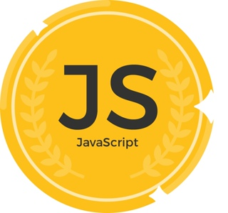

События, в результате которых появился JavaScript, разворачивались в течение шести месяцев, с мая по декабрь 1995 года. Компания Netscape Communications уверенно прокладывала себе путь в области веб-технологий. Её браузер Netscape Communicator успешно отвоевывал позиции у NCSA Mosaic, первого популярного веб-браузера. Netscape была создана людьми, принимавшими участие в разработке Mosaic в ранние 90-е. Теперь, с деньгами и независимостью, у них было всё необходимое для поиска способов дальнейшего развития веб-технологий. Именно это послужило толчком для рождения JavaScript.
Основатель Netscape Communications и бывший участник команды Mosaic Марк Андриссен
Самая первая реализация JavaScript была создана Бренданом Эйхом (англ. Brendan Eich) в компании Netscape, и с тех пор обновляется, чтобы соответствовать ECMA-262 Edition 5 и более поздним версиям. Этот движок называется SpiderMonkey и реализован на языке C/C++. Движок Rhino создан Норрисом Бойдом (англ. Norris Boyd) и реализован на языке Java. Как и SpiderMonkey, Rhino соответствует ECMA-262 Edition 5. JavaScript ("JS" для краткости) — это полноценный динамический язык программирования, который применяется к HTML документу, и может обеспечить динамическую интерактивность на веб-сайтах. Его разработал Brendan Eich, сооснователь проекта Mozilla, Mozilla Foundation и Mozilla Corporation.

JavaScript невероятно универсален и дружелюбен к новичкам. Обладая большим опытом, вы сможете создавать игры, анимированную 2D и 3D графику, полномасштабные приложения с базами данных и многое другое!
JavaScript сам по себе довольно компактный, но очень гибкий. Разработчиками написано большое количество инструментов поверх основного языка JavaScript, которые разблокируют огромное количество дополнительных функций с очень небольшим усилием.
К ним относятся: Программные интерфейсы приложения (API), встроенные в браузеры, обеспечивающие различные функциональные возможности, такие как динамическое создание HTML и установку CSS стилей, захват и манипуляция видеопотоком, работа с веб-камерой пользователя или генерация 3D графики и аудио сэмплов. Сторонние API позволяют разработчикам внедрять функциональность в свои сайты от других разработчиков, таких как Twitter или Facebook.Также вы можете применить к вашему HTML сторонние фреймворки и библиотеки, что позволит вам ускорить создание сайтов и приложений.
Строковое преобразование происходит, когда требуется представление чего-либо в виде строки. Например, alert(value) преобразует значение к строке.
Также мы можем использовать функцию String(value), чтобы преобразовать значение к строке:
let value = true;
alert(typeof value); // boolean
value = String(value); // теперь value это строка "true"
alert(typeof value); // string
| Название | Используемый движок JavaScript | Языки, на которых написан движок и платформа | Лицензия | |
|---|---|---|---|---|
| 2 | Петров В.В. | 4 | 6 | 5 |
| 3 | Сидоров В.В. | 6 | 9 | 7 |
| 4 | Алехин А.А. | 7 | 8 | 8 |
| 5 | Гейтс Б.В. | 8 | 10 | 9 |